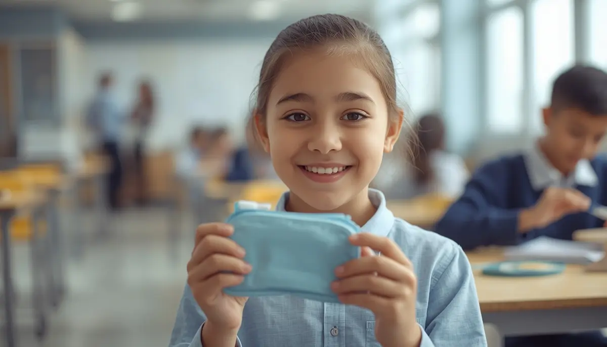

Salud bucodental: claves para una sonrisa sana
Cuidar la salud oral desde los primeros meses de vida sienta las bases de una sonrisa fuerte y previene complicaciones futuras. La aparición de los primeros dientes y la introducción de nuevos alimentos marcan el inicio de hábitos de higiene esenciales que acompañarán al menor en su crecimiento. He reunido aquí una guía completa para abordar la prevención de caries, el cepillado diario y las visitas al odontopediatra con absoluta tranquilidad. Pincha en cada tarjeta para profundizar en cada tema.
Comprender la importancia de los dientes de leche
Descubre por qué la salud de la dentición temporal es vital para la correcta masticación, el habla y la guía de los futuros dientes definitivos.
El desarrollo dental y la erupción de los primeros dientes
Conoce las etapas de salida de la dentición infantil, los síntomas habituales y cómo calmar las molestias de las encías de forma natural.

Prevención temprana de la caries y la placa bacteriana
Pautas sencillas para evitar la caries de biberón, cuidar los espacios interdentales y proteger el esmalte desde la primera infancia.

El ritual diario del cepillado dental en familia
Cómo introducir el uso del cepillo y las cantidades adecuadas de pasta fluorada según la edad para convertir la higiene en un hábito divertido.
Alimentación protectora y control de azúcares
Estrategias nutricionales para limitar los azúcares libres y fomentar alimentos crujientes que estimulen la limpieza natural de los dientes.
La primera visita al odontopediatra: sin miedo
Cuándo realizar la primera revisión dental (alrededor del primer año), cómo preparar al menor y elegir un entorno de confianza.

Protección dental ante golpes y hábitos orales
Cómo actuar ante traumatismos dentales infantiles en el parque o el colegio y la gestión del uso prolongado del chupete o la succión digital.
Cuidar la sonrisa con naturalidad y confianza
Fomentar una actitud positiva hacia la salud bucodental que transmita seguridad y autonomía al menor en su crecimiento.
🦷 Continúa integrando los hábitos diarios en familia
Para acompañar las rutinas de higiene y la regulación de forma completa, te sugerimos explorar estos recursos:
- 🎙️ Escucha el podcast: Límites con amor y regulación emocional (Ep. 07)
- 📥 Descarga el recurso práctico: Ritual de Sueño Tranquilo (PDF)